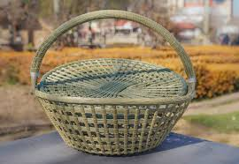
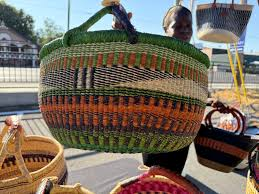
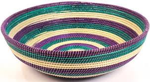
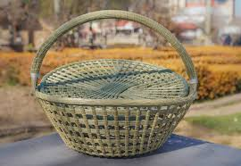
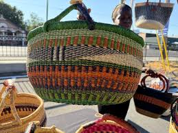
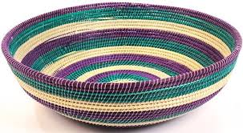

WAVEN BASKETS
The mountainous region of Lesotho provides an abundance of diverse grasses, serving as the primary raw material for basket weaving. Basotho women are renowned for their talent in basket weaving, a process that involves carefully sewing or weaving strands of material over and under each other to create three-dimensional artifact. Waven baskets are handcrafted containers, historically made from natural fibers like reeds, grasses, and rattan, though synthetic materials are also used now.Woven baskets are used for organizing household items, carrying food and supplies, and holding various goods. Their natural textures, handcrafted appearance, and ability to fit into a variety of decor styles make them popular home accents.